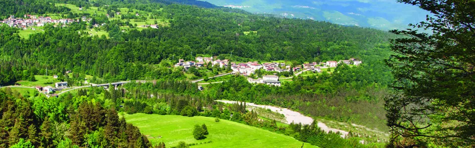

Kontakt und Anreise
Die Rezeption befindet sich in Mediis, Via Roma 20. Schreiben oder rufen Sie uns bei allen Fragen zu Ihrem Aufenthalt an.
Anreise
Route planen
Zwischen den Friauler und den Pesariner Dolomiten.
Socchieve liegt im oberen Friaul, in Karnien, im Tal zwischen Villa Santina und Forni di Sotto.
Autobahn A23Ausfahrt Carnia, dann SS52 Richtung Tolmezzo und Forni di Sopra (27 km ab der Ausfahrt)
Aus dem CadoreSS52 ab Forni di Sopra (26 km)
Aus PordenoneSS552 über den Monte Rest ab Tramonti di Sopra
Aus dem Val d'ArzinoGemeindestraße von Preone
Mit dem FlugzeugFlughafen Triest (103 km), Venedig Marco Polo (ca. 2 Std. 30)
Mit dem ZugBahnhof Carnia, dann SAF-Bus (Haltestelle in Mediis, Bar alla Posta)
Entfernungen ab der Rezeption
- Ampezzo4 km · ca. 5 min
- Tolmezzo17 km · ca. 25 min
- Sauris und sein See18 km · ca. 25 min
- Forni di Sopra26 km · ca. 35 min
- Val Pesarina (Pesariis)25 km · ca. 40 min
- Monte Zoncolan24 km · ca. 50 min
- Autobahnausfahrt A23 Carnia27 km · ca. 35 min
- Udine65 km · ca. 1 h 10
- Flughafen Triest103 km · ca. 1 h 35
- Lignano Sabbiadoro127 km · ca. 2 h 05
Col Gentile · Albergo Diffuso
Fragen Sie uns zu Ihrem Aufenthalt.
Für Informationen zu Häusern, Reisezeiten und Aufenthalten in Socchieve schreiben Sie uns. Die aktuelle Verfügbarkeit sehen Sie immer im Buchungssystem.
Mit * gekennzeichnete Felder sind Pflichtfelder. Eine Anfrage ist keine Buchung.